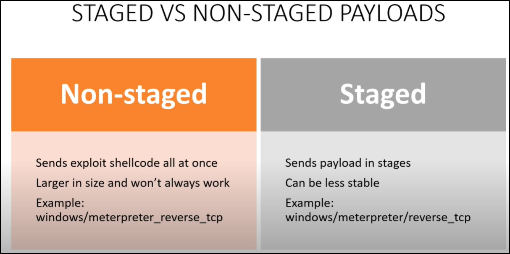

What is a Payload ??
- A Payload is what we will run as an exploit.
- Normally we send a Payload to a victim to get a shell access.
There are 2 types of Payload that we need to give our attention.
- Non-Staged Payload
- Staged Payload
Take Away
- If we have a payload that doesn't work maybe try other type of that payload.
- If our payload fails but we think it's the write exploit maybe change your payload.
